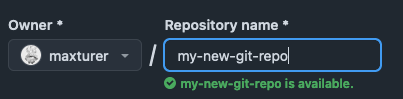
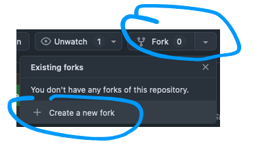
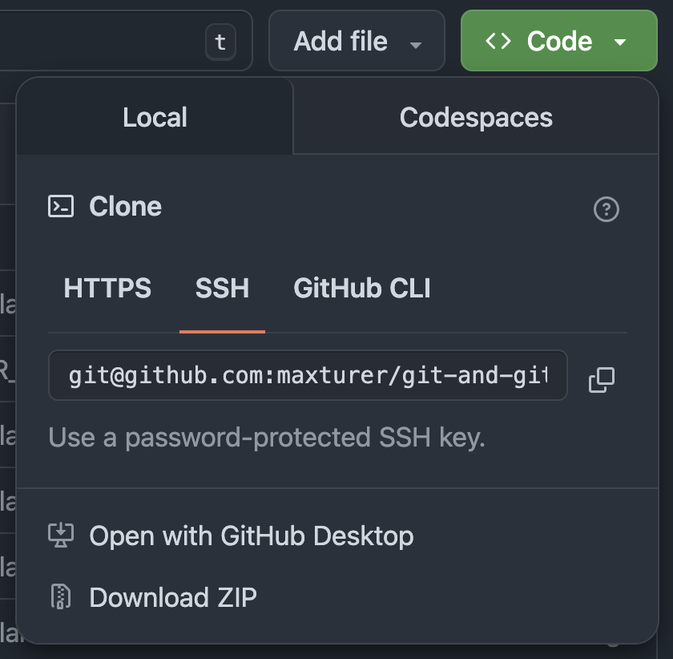
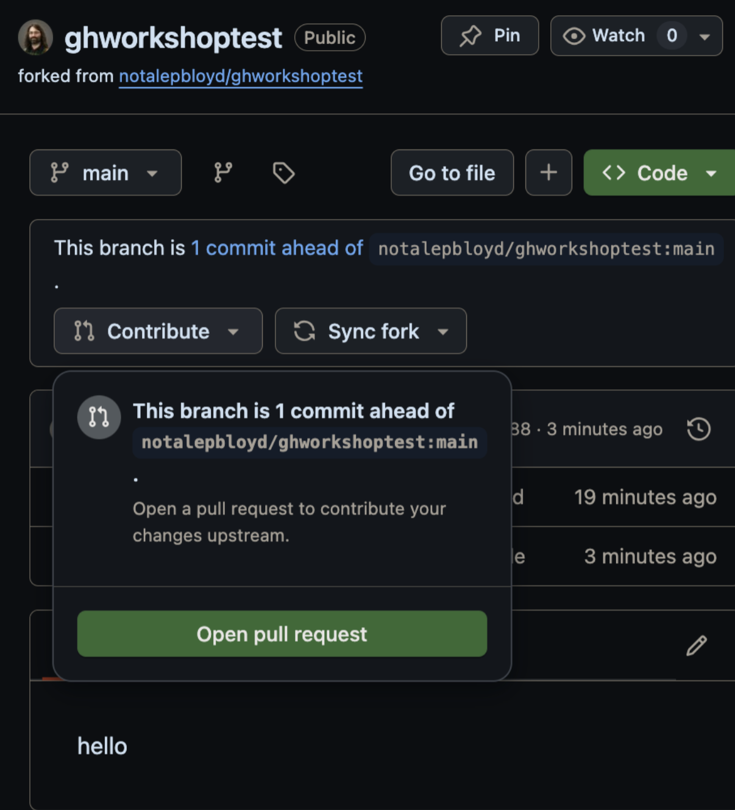

Head to GitHub, and look at a list of your repositories (if you have a new account, it's likely blank)
Click on the green button that says New on the top right.
You’ll be brought to the “New Repository page” to name and create your remote repository. I already called mine “my-new-git-repo” on my local computer, so I'll do the same here:

Once you submit and create, you have a GitHub repo! There are a lot of instructions here, but let’s focus on just a few.
To connect our repository ( /Users/[yourname]/my-new-git-repo ) with this new GitHub repository ( https://github.com/[your-username]/my-new-git-repo ), we can add the GitHub repository to ours as a remote.
Once we've clicked on "create repository", we're taken to a screen with all sorts of options. There's a lot you're able to do, but what we're mainly interested in right now is the sample code that they give us under "...or create a new repository on the command line".
echo "# garbanzo" >> README.md
git init
git add README.md
git commit -m "first commit"
git branch -M main
git remote add origin git@github.com:[your-username]/[my-new-git-repo]
git push -u origin main
The first thing we're going to do make a new folder, and then navigate to that folder. Let's do: mkdir ghworkshop && cd ghworkshop
Now we are in a folder called ghworkshop.
We are going to directly copy the code that they give us under the "...or create a new repository on the command line" and paste it into our terminal and hit enter. This is going to do a few things for us, but the main point is that it will create a new repository on your computer and then connect it with the repository you create on github.
We can check that this worked in two spots:
- in our browser, if we refresh the page, we should see a repository page that looks like the very first page we showed you of
a full repository.
- in our terminal, if we run git status, we should get a message that says:
On branch main
Your branch is up to date with 'origin/main'
nothing to commit

Forking an existing GitHub repository means making a copy and keeping it for yourself. It’s a bit like saving a zip file to your Downloads folder, but in Git language. You can practice forking this one:
https://github.com/maxturer/git-and-github
Once you’re there, click on the Fork button on the top right, then Create a new fork.
On the "Create a new fork" page, you can keep the default settings, and then click "Create fork" Now, you have a complete copy of the code from the github repository that you just created a "fork" of, but it only exists on github - not on your computer where you'd actually work on it.
There are a few ways to copy it, but if you have SSH setup like we've been demoing, click on the green button that says
Code. On the "Local" tab, select SSH and copy the provided line.
Back in your terminal, type git clone [THE-LINE-YOU-COPIED], and if all goes well, this will download the remote repository to
your computer.
Now that you have your own copy of the code on your machine, let's say we have a great idea to improve the original
repository. To keep it simple, we're going to say our idea is to just create a new file, we can call it "yourname.md" (you can call it
whatever, doesn't matter).
To do this, run touch yourname.md
If we run git status, we'll see we're now have an untracked file that we need to move through our git stages.
git add yourname.md
git commit -m "Add name file"
git push
Now if we look at our copy of the code on github, we can see the change that we made - but if we look at the repository that we "forked" - the original repository - our change isn't present there


If we think our code change is good, we might want to contribute it to the original code and make it an official part of the project - this is one of the ways how people collaborate on code and contribute to open source projects.
On your copy of the code in github, click on the "Contribute" button, and then the "Open pull request" button.
For now, the default setting is probably what you want. Write an example description of what changes you are proposing, then click "Create pull request".